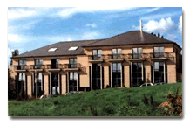

1997 - 2003 : infeurope S.A.
 infeurope is a luxembourgish company which...
- provides solid e-Business solutions based on the newest Integrated Document Management (IDM), Web Based Application, Databases and Electronic Document Processing technologies (XML/SGML).
- has a team of over 100 highly skilled developers, engineers, consultants and project managers ;
- has customers in the public as well as private sector, including the European institutions, several national government departments and groups within the banking, insurance and industry sectors.
I was employed by infeurope for 10 years. During my time in Luxembourg, I performed the analysis and development of web based Enterprise Application Integration (EAI) and e-procurement solutions, such as the:
- Payment system at the Office for Harmonization in the Internal Market in Alicante
- Publication system for the Swiss Official Gazette of Commerce (SOGC) in Bern
- Système d'Information pour les Marchés Publics (SIMAP) in Luxembourg
In addition to these long term contracts, I have been involved in many other smaller projects which have all worked towards improving my project management skills. You can get a general overview of these skills in the break down in the following pages.